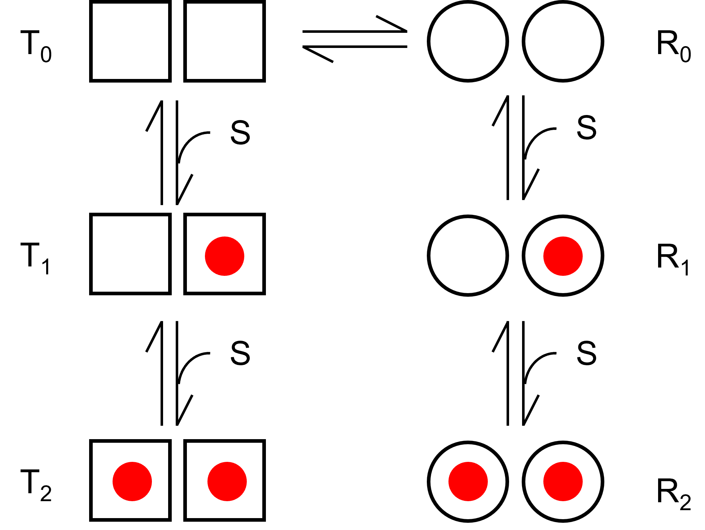

アロステリックモデル再考-05 MWCモデル
つぎに，アロステリックモデルの中でも有名なモデル，MWCモデルについて考えていきたいと思います．
MWCとは，Monod-Wyman-Changeux model，の略で，1965年に発表されたモデルです．
私の理解では，，MWCモデルは次に示すモデルとなります．
MWCモデル

まずはT状態とR状態を遷移するモデルを考えますが，基質SはT，R状態それぞれに結合すると考えましょう．
簡単に2つの結合サイトがあるとします．
TとR
TとRは平衡状態にあり，その割合Lは，
\( \Large L= \frac{T_0}{R_0} \)
と書けます．
それぞれの状態を計算していきますが，単に同様の作業を行うだけです．
解離定数，KT, KR
ここで，T状態の基質Sに対する解離定数，KT，R状態の基質Sに対する解離定数，KRは，
\( \Large K_T= \frac{2 T_0 S}{T_1} = \frac{ T_1 S}{2 T_2}\) \( \Large K_R= \frac{2 R_0 S}{R_1} = \frac{ R_1 S}{2 R_2}\)
となります．
T1，T2，R1，R2
T1，T2，R1，R2は，
\( \Large T_1 = \frac{2 S}{K_T} T_0 = \frac{2 S}{K_T} L R_0\) \( \Large R_1 = \frac{2 S}{K_R} R_0 \)
\( \Large T_2 = \frac{S}{2 K_T} T_1 = \frac{S^2}{K_T^2} T_0 = \frac{S^2}{K_T^2} L R_0 \) \( \Large R_2 = \frac{S}{2 K_R} R_1 = \frac{S^2}{K_R^2} R_0 \)
６状態の結合サイトの総数
６状態の結合サイトの総数は，各状態に２つずつ結合サイトがありますので，
\( \Large \begin{eqnarray} \Large 2( T_0 + T_1 + T_2 + R_0 + R_1 +R_2) &=& 2(L R_0 + \frac{2 S}{K_T} L R_0 + \frac{S^2}{K_T^2} L R_0 + R_0 + \frac{2 S}{K_R} R_0 + \frac{S^2}{K_R^2} R_0) \\
&=&
2 R_0 \left[ L \left(1 + \frac{2 S}{K_T} + \frac{S^2}{K_T^2} \right) + 1 + \frac{2 S}{K_R} + \frac{S^2}{K_R^2} \right] \\
&=&
2 R_0 \left[ L \left( 1 + \frac{ S}{K_T} \right)^2+ \left( 1 + \frac{ S}{K_R} \right)^2 \right] \\
\end{eqnarray} \)
となります．
基質Sが結合している数
基質Sが結合している数は，
\( \Large \begin{eqnarray} \Large T_1 + T_2 + R_1 +2 R_2 &=& \frac{2 S}{K_T} L R_0 + 2 \frac{S^2}{K_T^2} L R_0 + \frac{2 S}{K_R} R_0 + 2 \frac{S^2}{K_R^2} R_0 \\
&=&
2 R_0 \left[ \frac{ S}{K_T} L \left( 1 + \frac{S}{K_T} \right) + \frac{ S}{K_R} \left( 1 + \frac{S}{K_R} \right)\right] \\
\end{eqnarray} \)
基質飽和度
基質飽和度，Yは，
\( \Large \begin{eqnarray} Y &=& \frac{T_1 + 2 T_2 + R_1 +2 R_2}{2( T_0 +T_1 + T_2 + R_0 + R_1 +R_2)} \\
&=&
\frac{ 2 R_0 \left[ \frac{ S}{K_T} L \left( 1 + \frac{S}{K_T} \right) + \frac{ S}{K_R} \left( 1 + \frac{S}{K_R} \right)\right]}{2 R_0 \left[ L \left( 1 + \frac{ S}{K_T} \right)^2+ \left( 1 + \frac{ S}{K_R} \right)^2 \right]} \\
&=&
\frac{ \left[ \frac{ S}{K_T} L \left( 1 + \frac{S}{K_T} \right) + \frac{ S}{K_R} \left( 1 + \frac{S}{K_R} \right)\right]}{ \left[ L \left( 1 + \frac{ S}{K_T} \right)^2+ \left( 1 + \frac{ S}{K_R} \right)^2 \right]} \\
\end{eqnarray} \)
となります．
ここで，
\( \Large C \equiv \frac{K_R}{K_T} \)
\( \Large \alpha \equiv \frac{S}{K_R} \)
とすると，
\( \Large c \alpha = \frac{S}{K_T} \)
したがって，
\( \Large Y = \frac{L c \alpha \left( 1 + c \alpha \right) + \alpha \left( 1 + \alpha \right)}{ L \left( 1 + c \alpha \right)^2+ \left( 1 + \alpha \right)^2 } \)
となります，結合部位がｎの場合には，
\( \Large Y = \frac{L c \alpha \left( 1 + c \alpha \right)^{n-1} + \alpha \left( 1 + \alpha \right)^{n-1}}{ L \left( 1 + c \alpha \right)^n+ \left( 1 + \alpha \right)^n } \)
R状態に存在する確率
R状態に存在する確率は，
\( \Large \bar{R} = \frac{R_0 + R_1 + R_2}{ T_0 +T_1 + T_2 + R_0 + R_1 +R_2} \)
ですので，
\( \Large \begin{eqnarray} \bar{R} &=& \frac{R_0 \left[ 1 + \frac{2 S}{K_R} + \frac{S^2}{K_R^2} \right]}{ R_0 \left[ L \left( 1 + \frac{ S}{K_T} \right)^2+ \left( 1 + \frac{ S}{K_R} \right)^2 \right]} \\
&=& \frac{ \left( 1 + \frac{ S}{K_R} \right)^2}{ L \left( 1 + \frac{ S}{K_T} \right)^2+ \left( 1 + \frac{ S}{K_R} \right)^2 } \\
&=& \frac{ \left( 1 + \alpha \right)^2}{ L \left( 1 +c \alpha \right)^2+ \left( 1 +\alpha \right)^2 } \\
\end{eqnarray} \)
となります，結合部位がｎの場合には，
\( \Large \bar{R} = \frac{ \left( 1 + \alpha \right)^n}{ L \left( 1 +c \alpha \right)^n+ \left( 1 +\alpha \right)^n } \)
となります．
このサイトの式と一致しました．